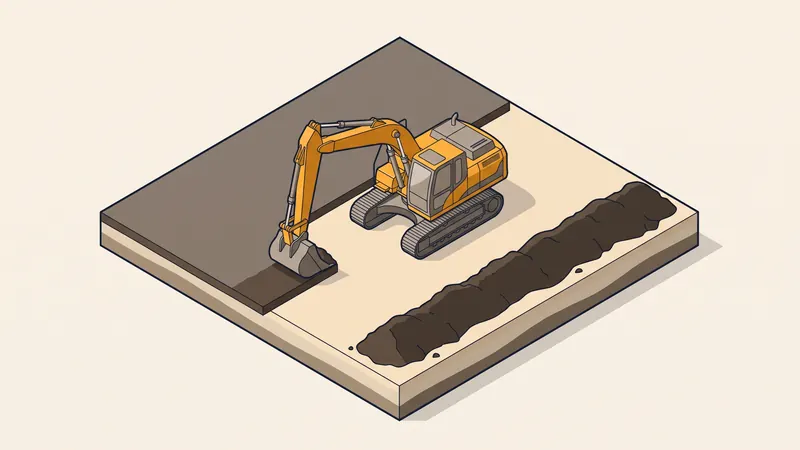

Prix Décapage Terre Végétale au m² en 2026 : Tarifs & Guide Complet
Avant de couler une dalle, des fondations ou d'aménager une plateforme, une étape incontournable s'impose : le décapage de la terre végétale. C'est la toute première opération d'un chantier de terrassement. Mais quel est le prix du décapage de terre végétale au m² en 2026 ? Quelle épaisseur retirer, que faire de cette terre, faut-il la stocker, la réutiliser ou l'évacuer ? Ce guide d'expert détaille les tarifs pratiqués à Aix-en-Provence et en PACA, ainsi que toutes les bonnes pratiques pour maîtriser votre budget.

Qu'est-ce que le décapage de la terre végétale ?
Le décapage consiste à retirer la couche superficielle du sol, appelée terre végétale, sur une épaisseur généralement comprise entre 15 et 40 cm. Cette terre brune, riche en matière organique (humus, racines, micro-organismes), constitue le support de la végétation. Elle est précieuse pour le jardin mais totalement inadaptée pour supporter une construction.
En effet, la terre végétale est meuble, compressible et non portante : elle se tasse et se déforme sous les charges. Construire directement dessus exposerait la structure à des tassements différentiels, des fissures et une instabilité durable. Le décaissement de terre végétale permet donc d'atteindre le sol stable et porteur situé en dessous, avant d'engager les fouilles de fondation ou la mise en forme de la plateforme.
Le décapage est ainsi la 1re étape du terrassement, réalisée juste après le piquetage et l'implantation du projet, et avant toute excavation profonde.

Prix du décapage de terre végétale au m² en 2026
Le coût du décapage dépend de l'épaisseur à retirer, de la surface du chantier et de ce que l'on fait de la terre (mise de côté, régalage, stockage ou évacuation). Voici les fourchettes constatées en 2026 en région PACA :
| Prestation | Épaisseur / surface | Prix au m² (HT) |
|---|---|---|
| Décapage simple (mise de côté sur site) | 15 à 25 cm, < 500 m² | 3 - 6 €/m² |
| Décapage simple (grande surface) | 15 à 25 cm, > 2000 m² | 2 - 4 €/m² |
| Décapage épais (sol riche) | 30 à 40 cm | 4 - 8 €/m² |
| Décapage + régalage sur site | terre étalée sur le terrain | +1 - 3 €/m² |
| Décapage + mise en cordon (stockage) | andain < 2 m de hauteur | +1 - 2 €/m² |
| Décapage + évacuation | chargement + transport | +3 - 8 €/m² |
Ces tarifs comprennent la main-d'oeuvre et l'engin de décapage (pelle ou chargeuse). Le décapage simple se situe donc entre 2 et 6 €/m², auquel s'ajoutent le poste stockage/régalage et, le cas échéant, l'évacuation. Sur les petites surfaces, le prix unitaire est plus élevé en raison des frais fixes (transport et installation des engins).
Que faire de la terre végétale décapée ?
La gestion de la terre décapée est le poste qui fait le plus varier la facture. Plusieurs solutions existent, de la plus économique à la plus coûteuse :
| Solution | Principe | Coût indicatif |
|---|---|---|
| Régalage sur site | Terre réétalée sur les futurs espaces verts du terrain | Gratuit à 3 €/m² |
| Mise en cordon / stockage | Andain temporaire < 2 m, réutilisé en fin de chantier | 1 - 2 €/m² |
| Vente ou don | Terre de qualité cédée à un tiers ou un paysagiste | Gain possible |
| Évacuation en décharge / plateforme | Chargement et transport au m³ vers un site agréé | 8 - 20 €/m³ |
La réutilisation sur site (régalage ou cordon) est presque toujours la plus avantageuse : elle évite le double coût de l'évacuation et de l'achat de terre neuve (souvent 25 à 45 €/m³ livrée). L'évacuation ne se justifie que lorsque la terre est polluée, excédentaire ou de mauvaise qualité, ou faute de place pour la stocker.
Technique : profondeur, stockage et réutilisation
Profondeur de décapage
La profondeur de décapage dépend de l'épaisseur réelle de la couche végétale. Elle se détermine par un simple sondage à la pelle. En moyenne, on retire 20 à 30 cm, parfois davantage sur les sols agricoles riches. Il ne faut décaper ni trop peu (on laisse de la matière organique sous la dalle) ni trop (on extrait inutilement du bon sol porteur, ce qui augmente les volumes).
Stockage en cordon pour préserver le sol
Pour conserver la fertilité de la terre, le stockage en cordon (ou andain) doit respecter une règle essentielle : une hauteur inférieure à 2 mètres. Au-delà, le poids tasse la terre, chasse l'oxygène et asphyxie la vie microbienne : la terre « meurt » et perd sa valeur agronomique. Le cordon doit être placé à l'écart de la circulation des engins et, idéalement, ne pas rester compacté plus de quelques mois.
Réutilisation pour le jardin et le modelage
En fin de chantier, la terre stockée est réutilisée pour la finition des espaces extérieurs : création de massifs, engazonnement, modelage du jardin, talus paysagers. C'est une ressource gratuite et locale qui valorise le terrain sans apport extérieur.
Terre végétale ou déblais : ne pas confondre
Il est crucial de distinguer la terre végétale (couche superficielle fertile) des déblais de terrassement (argile, marne, cailloux, roche extraits ensuite lors des fouilles). Ces matériaux n'ont ni la même valeur ni le même usage : la terre végétale se réutilise pour le jardin, tandis que les déblais inertes servent au remblai ou partent en évacuation de gravats. Les mélanger rend la terre inutilisable. Un bon terrassier les sépare dès le décapage.
Quels engins pour le décapage ?
Le choix de l'engin dépend de la surface et de l'accessibilité :
- Mini-pelle (1,5 à 5 t) : pour les petites surfaces et les accès difficiles (jardins clos, terrains enclavés).
- Pelle mécanique (8 à 20 t) : l'engin polyvalent pour la plupart des chantiers de maison individuelle, équipée d'un godet de curage.
- Chargeuse sur pneus : idéale pour décaper et charger rapidement les camions sur les surfaces dégagées.
- Bulldozer : réservé aux très grandes surfaces (lotissements, plateformes industrielles > 2000 m²), il décape de larges bandes à grande vitesse.
Quel que soit l'engin, il faut anticiper le foisonnement : une fois décapée et chargée, la terre augmente de volume de 20 à 30 %. Ainsi, 100 m³ de terre en place représentent 120 à 130 m³ à transporter. Ce coefficient impacte directement le coût d'évacuation et le nombre de rotations de camions.
Le décapage en région PACA et à Aix-en-Provence
La région Provence-Alpes-Côte d'Azur présente des particularités qui influencent le décapage :
- Sols caillouteux et calcaires : très fréquents autour d'Aix-en-Provence, ils rendent le godet plus difficile à charger et augmentent l'usure.
- Couche de terre végétale fine : souvent seulement 10 à 25 cm, contre 30 à 40 cm dans les régions agricoles. Le volume à gérer est donc plus réduit.
- Valorisation locale : la bonne terre végétale étant rare en Provence, elle se revend ou se réutilise facilement, ce qui en fait une ressource à ne surtout pas gaspiller.
Obtenez Votre Devis Décapage Gratuit
Chez STP Terrassement, nous décapons, stockons et valorisons votre terre végétale à Aix-en-Provence et dans toute la PACA. Devis détaillé, transparent et sans engagement.
Demandez votre devis gratuitExemple de chantier réel à Aix-en-Provence
Décapage avant dalle d'une maison aux Milles
Projet : Décapage de la terre végétale avant fondations et dalle d'une maison de plain-pied de 120 m².
Localisation : Quartier des Milles, à l'ouest d'Aix-en-Provence.
Surface : 320 m² de plateforme, épaisseur de terre végétale mesurée à 18 cm.
Durée : 1,5 jour.
Contexte : Sol typiquement caillouteux avec une fine couche de terre brune. Le client souhaitait conserver un maximum de terre pour son futur jardin.
Solution STP : Décapage à la pelle 12 tonnes avec godet de curage, sur 18 cm exactement après sondage. La terre végétale (environ 58 m³) a été mise en cordon de 1,80 m de hauteur en fond de parcelle, à l'écart de la zone de travail. Aucune évacuation n'a été nécessaire, la terre étant intégralement réutilisée en fin de chantier pour les massifs et l'engazonnement.
Résultat : Plateforme propre et porteuse livrée en 1,5 jour, coût du poste décapage limité à 1 280 € HT (soit 4 €/m²) grâce à l'absence d'évacuation et au stockage in situ. Économie estimée de 900 € sur l'achat de terre neuve.
Les erreurs courantes à éviter
- Mélanger la terre végétale avec les déblais. Une fois mêlée à de l'argile ou des cailloux, la terre devient inutilisable pour le jardin et doit être évacuée à perte.
- Stocker en tas trop haut (> 2 m). Le tassement asphyxie le sol, détruit la vie microbienne et fait perdre toute la valeur agronomique de la terre.
- Décaper trop profond ou pas assez. Trop profond, on extrait inutilement du bon sol ; pas assez, on laisse de la matière organique compressible sous la dalle.
- Oublier le foisonnement dans le calcul. Sous-estimer l'augmentation de volume (20 à 30 %) fausse le nombre de camions et le coût d'évacuation.
- Évacuer une terre réutilisable. Payer l'évacuation puis racheter de la terre neuve revient à payer deux fois : un non-sens économique et écologique.
- Négliger le sondage préalable. Sans mesure de l'épaisseur réelle, le devis au m² est approximatif et les surprises fréquentes.
Questions fréquentes
Quel est le prix du décapage de terre végétale au m² en 2026 ?
Le décapage simple de terre végétale coûte entre 2 et 6 euros le m² en 2026, hors stockage et évacuation. Le prix dépend de l'épaisseur à retirer (15 à 40 cm), de la surface du chantier et de la nature du sol. À Aix-en-Provence et en PACA, comptez plutôt 3 à 6 €/m² sur les terrains caillouteux.
Qu'est-ce que le décapage de la terre végétale ?
Le décapage est la première étape du terrassement. Il consiste à retirer la couche superficielle du sol (la terre végétale, 15 à 40 cm) riche en matière organique, avant de réaliser les fondations, une dalle ou une plateforme. Cette terre meuble n'est pas portante et doit être enlevée pour atteindre le sol stable.
Quelle épaisseur de terre végétale faut-il décaper ?
L'épaisseur à décaper varie de 15 à 40 cm selon la richesse du sol. En PACA, la couche de terre végétale est souvent fine (10 à 25 cm) car les sols sont caillouteux et calcaires. Un sondage préalable permet de déterminer la profondeur exacte de décapage nécessaire.
Peut-on réutiliser la terre végétale décapée ?
Oui, et c'est fortement recommandé. La terre végétale est une ressource précieuse. Elle peut être régalée sur le terrain pour les espaces verts, mise en cordon pour un stockage temporaire, ou réutilisée pour le modelage du jardin. La réutilisation sur site évite les coûts d'évacuation et d'apport de terre neuve.
Comment stocker la terre végétale pour la préserver ?
La terre végétale se stocke en cordon (andain) d'une hauteur inférieure à 2 mètres pour préserver la vie microbienne et la structure du sol. Au-delà, le tassement et le manque d'oxygène asphyxient la terre et détruisent sa fertilité. Le cordon doit être placé à l'écart des zones de circulation des engins.
Quelle différence entre terre végétale et déblais de terrassement ?
La terre végétale est la couche superficielle fertile, brune et riche en humus, réutilisable pour les espaces verts. Les déblais de terrassement correspondent aux matériaux plus profonds (argile, marne, cailloux, roche) extraits ensuite lors des fouilles. Ces deux types de matériaux doivent être séparés et stockés distinctement.
Le prix du décapage inclut-il l'évacuation de la terre ?
Non. Le décapage simple (2 à 6 €/m²) ne comprend que le retrait et la mise de côté de la terre. L'évacuation se facture en supplément au m³ (8 à 20 €/m³ selon la distance), et il faut tenir compte du foisonnement (volume augmenté de 20 à 30 % après extraction).
Quels engins sont utilisés pour le décapage de terre végétale ?
Pour les surfaces courantes, on utilise une pelle mécanique ou une mini-pelle équipée d'un godet de curage. Pour les grandes surfaces (plus de 2000 m²), une chargeuse ou un bulldozer décape rapidement de larges bandes. Le choix de l'engin dépend de la surface, de l'accessibilité et de la nature du sol.
Pour aller plus loin
Pourquoi faire appel à un pro comme STP Terrassement
Confier le décapage de votre terre végétale à STP Terrassement, c'est s'appuyer sur une entreprise locale implantée à Simiane-Collongue (13109) et intervenant chaque jour à Aix-en-Provence et dans toute la région PACA. Nos équipes disposent d'un parc d'engins récents (mini-pelles 1,5 t à pelles 20 t, chargeuses, camions 8x4), d'une garantie décennale en cours de validité et de plus de 15 ans d'expérience sur les sols provençaux. Nous mesurons précisément l'épaisseur à décaper, séparons soigneusement la terre végétale des déblais, la stockons dans les règles de l'art et la valorisons sur votre terrain pour vous éviter des coûts inutiles. Nous établissons un devis détaillé gratuit et sans engagement, nous respectons les plannings et nous tenons le budget validé. Demandez votre devis gratuit en ligne ou appelez-nous au 07 45 14 20 49 pour échanger directement avec un chargé d'affaires.